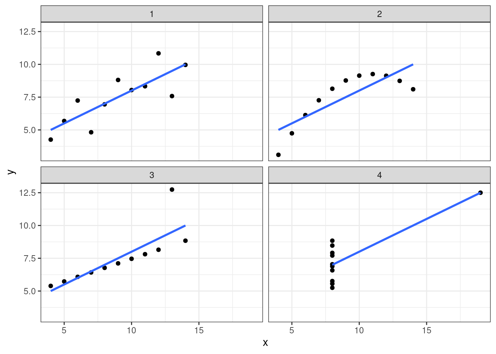
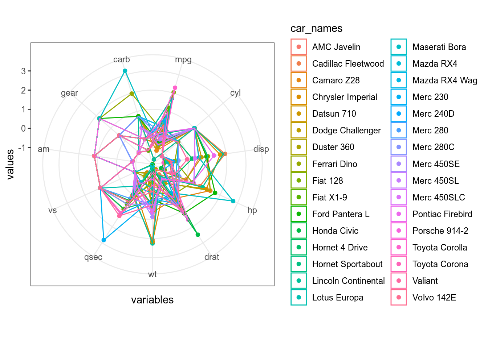
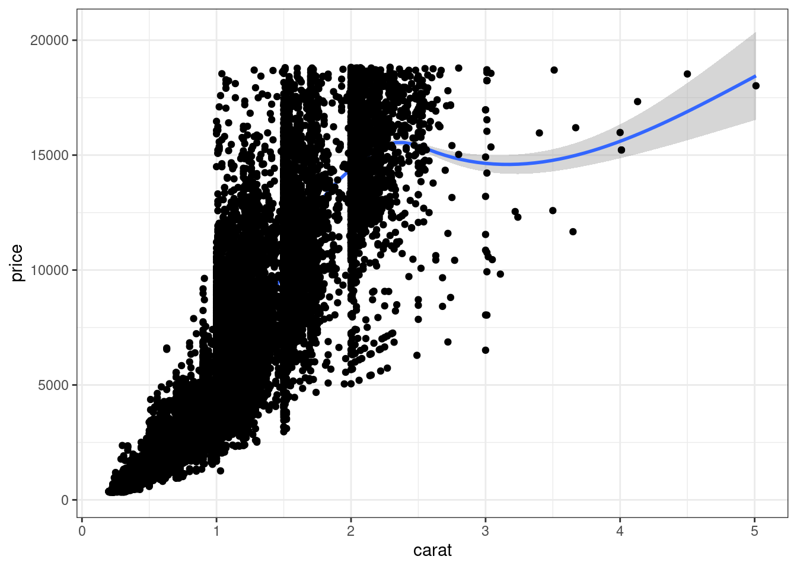
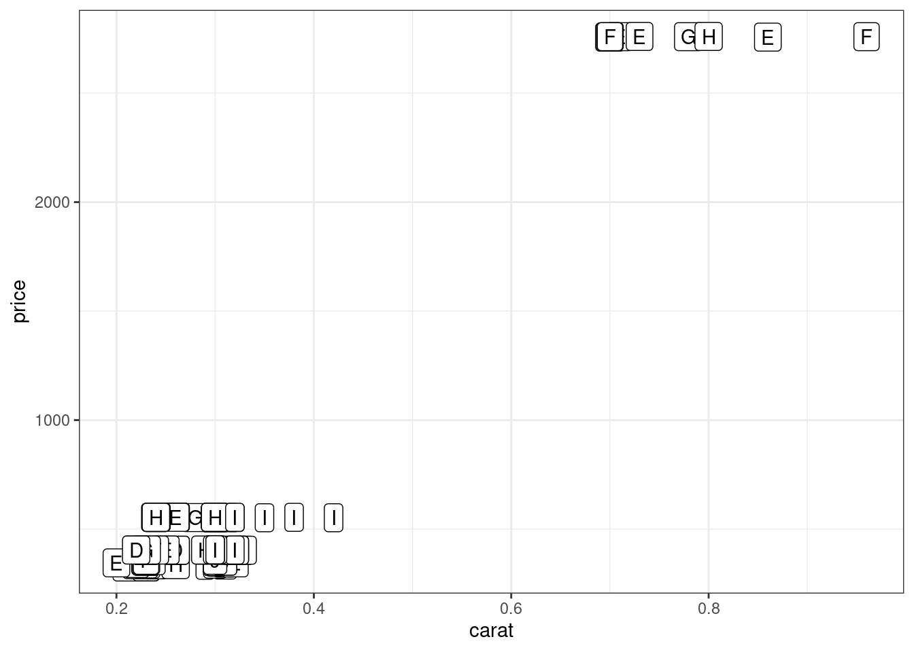

18 Методы уменьшения размерностей
Методы уменьшения размерностей – это эксплораторные методы, которые позволяет использовать меньше переменных для того, чтобы найти связи в данных и связи между переменными. Немножко жаргона: размерность здесь является прямым аналогом размерности в описании физических объектов (например, 2-ухмерное, 3-ехмерное, 4-ехмерное и т. д. пространство). Важно понимать, что каждая переменная в любом датасете можно воспринимать как отдельную размерность, так что каждая строчка в датасете mtcars – объект в 11-мерном пространстве просто потому что в этом датасете 11 переменных.
18.1 Визуализация многомерных пространств
Визуализация многомерного пространства — дело сложное. Когда переменных не так уж и много, то в целом данную задачу можно решить используя разные трюки:
- много диаграмм рассеяния
- радиальная диаграмма (радар, паук)
mtcars %>%
mutate(car_names = rownames(mtcars)) %>%
pivot_longer(names_to = "variables", values_to = "values", mpg:carb) %>%
mutate(variables = factor(variables, levels = colnames(mtcars))) %>%
ggplot(aes(variables, values, color = car_names, group = car_names))+
geom_point()+
geom_polygon(fill = NA)+
ggproto("CordRadar", CoordPolar, theta = "x", r = "x", start = 0, direction = 1, is_linear = function(coord) TRUE)
Не очень видно. Давайте нормализуем переменные:
mtcars %>%
mutate_all(scale) %>%
mutate(car_names = rownames(mtcars)) %>%
pivot_longer(names_to = "variables", values_to = "values", mpg:carb) %>%
mutate(variables = factor(variables, levels = colnames(mtcars))) %>%
ggplot(aes(variables, values, color = car_names, group = car_names))+
geom_point()+
geom_polygon(fill = NA)+
ggproto("CordRadar", CoordPolar, theta = "x", r = "x", start = 0, direction = 1, is_linear = function(coord) TRUE)
Все равно не очень хорошо видно, давайте сделаем фасетизацию:
mtcars %>%
mutate_all(scale) %>%
mutate(car_names = rownames(mtcars)) %>%
pivot_longer(names_to = "variables", values_to = "values", mpg:carb) %>%
mutate(variables = factor(variables, levels = colnames(mtcars))) %>%
ggplot(aes(variables, values, group = car_names, color = car_names))+
geom_point(show.legend = FALSE)+
geom_polygon(fill = NA, show.legend = FALSE)+
facet_wrap(~car_names)+
ggproto("CordRadar", CoordPolar, theta = "x", r = "x", start = 0, direction = 1, is_linear = function(coord) TRUE)
18.2 Простой пример: из двумерного пространства в одномерное пространство
Мы уже рассматривали связь между количество слов в рассказе и количеством слов и в рассказах М. Зощенко:

Мы уже смотрели коэффициент корреляции между этими переменными (r = 0.83).
Представим, что я перешел к новой системе координат:

Теперь я могу предсказывать значения переменных количество слов в рассказе и количестов и в рассказе на основе этой новой переменной.
zo %>%
select(n, n_words) %>%
prcomp(scale. = TRUE) %>%
broom::augment(zo) %>%
pivot_longer(names_to = "type", values_to = "value", n:n_words) %>%
mutate(type = recode(type, n = "количество и", n_words = "количество слов")) %>%
group_by(type) %>%
mutate(cor = str_c("r = ",round(cor(.fittedPC1, value), 2)),
max = max(value)- sd(value)) %>%
ggplot(aes(.fittedPC1, value))+
geom_point()+
geom_label(aes(label = cor, y = max), x = -1.5)+
facet_wrap(~type, scales = "free")+
labs(x = "новая переменная", y = "старые переменные")
18.3 Многомерное шкалирование (MDS)
Многомерное шкалирование – преобразование из многомерного пространства в n-мерное пространство (чаще всего смотрят на n равное 2), которое старается как можно меньше исказить расстояния между наблюдениями.
iris %>%
select(-Species) %>%
dist() %>%
cmdscale() %>%
as_tibble() %>%
bind_cols(iris) %>%
ggplot(aes(V1, V2, color = Species))+
geom_point()## Warning: The `x` argument of `as_tibble.matrix()` must have column names if `.name_repair` is omitted as of tibble 2.0.0.
## Using compatibility `.name_repair`.
## This warning is displayed once every 8 hours.
## Call `lifecycle::last_warnings()` to see where this warning was generated.
Если по какой-то причине вы хотите использовать большую размерность итогового пространства, можно использовать аргумент k функции cmdscale() (по умолчанию он 2). Как видно из кода, я использовал функцию dist(), которую мы видели в предыдущем разделе: мы можем использовать любую другую матрицу расстояний, которую мы посчитаем (существует множество метрик расстояния, которые можно посмотреть в справке ?dist). Давайте, например, посмотрим на многомерное шкалирование расстояний Левинштейна-Димерау между стопсловами русского языка:
library(stringdist)
library(stopwords)
stringdistmatrix(stopwords("ru")) %>%
cmdscale() %>%
as_tibble() %>%
mutate(words = stopwords("ru")) %>%
ggplot(aes(V1, V2, label = words))+
geom_text()
Как интерпретировать получившийся график? Часто мы не можем придать никакого значения получившимся осям, однако расстояния между точками на графике призвано отражать расстояние в многомерном пространстве. Так что, используя многомерное шкалирование
- можно обнаружить, есть ли кластеры в многомерных данных
- можно обнаружить, есть ли связь между наблюдениями, в том числе невыраженная переменными, которые есть в датасете. Например, из графика со стопсловами, видна “скрытая” переменная – длина слова.
В датасет записаны частотности некоторых слов в рассказах А. Чехова и М. Зощенко. Постройте многомерное шкалирование используя все переменные, и раскрасьте рассказы в зависимости от авторства. Делятся ли рассказы на кластеры? Как вы думаете почему?
18.4 Метод главных компонент (PCA)
Метод главных компонент – преобразование из многомерного пространства в n-мерное пространство (чаще всего смотрят на n равное 2), которое старается как можно меньше исказить корреляции между переменными.
library(broom)
iris %>%
select(-Species) %>%
prcomp() %>%
augment(iris) %>%
ggplot(aes(.fittedPC1, .fittedPC2, color = Species))+
geom_point()
В целом, эта картинка ничем не отличается от полученной нам в многомерном шкалировании (плсю-минус зеркальное отображение; так будет каждый раз, если при построении многомерного шкалирования использовано евклидово расстояние).
Так как метод главных компонент старается сохранить как можно больше дисперсии из всех данных, в результате этот метод (да и многомерное шкалирование) очень чувствителен к дисперсии переменных. Это значит, что данный метод будет давать разные результаты в зависимости того, в метрах исследуемая переменная или в километрах. Чтобы предотвратить этот крен в сторону переменных с большей дисперсией, следует добавлять в функцию prcomp() аргумент scale. = TRUE, которые, соответственно нормализует переменные перед применением алгоритма:
iris %>%
select(-Species) %>%
prcomp(scale. = TRUE) %>%
augment(iris) %>%
ggplot(aes(.fittedPC1, .fittedPC2, color = Species))+
geom_point()
В отличие от многомерного шкалирования, метод главных компонент позволяет также посмотреть на процент объясненной дисперсии:
## Importance of components:
## PC1 PC2 PC3 PC4
## Standard deviation 1.7084 0.9560 0.38309 0.14393
## Proportion of Variance 0.7296 0.2285 0.03669 0.00518
## Cumulative Proportion 0.7296 0.9581 0.99482 1.00000Ученые (к счастью) не договорились относительно порога, начиная с которого процент объясненной дисперсии является хорошим. Я обычно радуюсь значением больше 0.7 (т. е. при переходе к новым осям мы выкинули всего 30% дисперсии).
Кроме того, благодаря методу главных компонент мы можем посмотреть на связь переменных. Давайте продемонстрируем это на частотности слов в евангелиях:
gospels <- read_csv("https://raw.githubusercontent.com/agricolamz/2019_data_analysis_for_linguists/master/data/gospel_freq_words.csv")## Parsed with column specification:
## cols(
## word = col_character(),
## John = col_double(),
## Luke = col_double(),
## Mark = col_double(),
## Matthew = col_double()
## )PCA <- prcomp(gospels[,-1], scale. = TRUE)
row.names(PCA$x) <- gospels$word
library(ggfortify)
autoplot(PCA,
shape = FALSE,
loadings = TRUE,
label = TRUE,
loadings.label = TRUE)
Косинус угла между стрелочками соответствует коэффиценту корреляции между ними
## John Luke Mark Matthew
## John 1.0000000 0.5560482 0.6357893 0.6397344
## Luke 0.5560482 1.0000000 0.7277001 0.7962913
## Mark 0.6357893 0.7277001 1.0000000 0.7916982
## Matthew 0.6397344 0.7962913 0.7916982 1.0000000Мы точно так же можем работать не только с данными, но и с матрицей расстояния:
st_words <- tibble(words = stopwords("ru"))
stringdistmatrix(st_words$words) %>%
prcomp(scale. = TRUE) %>%
augment(st_words) %>%
ggplot(aes(.fittedPC1, .fittedPC2, label = words))+
geom_text()
## Importance of components:
## PC1 PC2 PC3 PC4 PC5 PC6 PC7
## Standard deviation 9.1094 3.50931 3.05332 2.5126 2.40159 2.20270 2.10269
## Proportion of Variance 0.5219 0.07745 0.05863 0.0397 0.03627 0.03051 0.02781
## Cumulative Proportion 0.5219 0.59935 0.65798 0.6977 0.73396 0.76448 0.79228
## PC8 PC9 PC10 PC11 PC12 PC13 PC14
## Standard deviation 1.83939 1.68455 1.64582 1.50108 1.43699 1.32001 1.19788
## Proportion of Variance 0.02128 0.01785 0.01704 0.01417 0.01299 0.01096 0.00902
## Cumulative Proportion 0.81356 0.83141 0.84844 0.86262 0.87560 0.88656 0.89559
## PC15 PC16 PC17 PC18 PC19 PC20 PC21
## Standard deviation 1.14934 1.12332 1.08208 1.04435 0.93055 0.90376 0.88367
## Proportion of Variance 0.00831 0.00794 0.00736 0.00686 0.00545 0.00514 0.00491
## Cumulative Proportion 0.90389 0.91183 0.91919 0.92605 0.93150 0.93664 0.94155
## PC22 PC23 PC24 PC25 PC26 PC27 PC28
## Standard deviation 0.87275 0.81203 0.75994 0.73676 0.7249 0.67007 0.64885
## Proportion of Variance 0.00479 0.00415 0.00363 0.00341 0.0033 0.00282 0.00265
## Cumulative Proportion 0.94634 0.95049 0.95412 0.95753 0.9608 0.96366 0.96631
## PC29 PC30 PC31 PC32 PC33 PC34 PC35
## Standard deviation 0.61520 0.59373 0.5775 0.57012 0.53217 0.5039 0.48679
## Proportion of Variance 0.00238 0.00222 0.0021 0.00204 0.00178 0.0016 0.00149
## Cumulative Proportion 0.96869 0.97091 0.9730 0.97505 0.97683 0.9784 0.97992
## PC36 PC37 PC38 PC39 PC40 PC41 PC42
## Standard deviation 0.48309 0.44708 0.43207 0.3987 0.39240 0.36516 0.35923
## Proportion of Variance 0.00147 0.00126 0.00117 0.0010 0.00097 0.00084 0.00081
## Cumulative Proportion 0.98138 0.98264 0.98381 0.9848 0.98578 0.98662 0.98743
## PC43 PC44 PC45 PC46 PC47 PC48 PC49
## Standard deviation 0.34764 0.3330 0.31735 0.31360 0.30236 0.29669 0.28040
## Proportion of Variance 0.00076 0.0007 0.00063 0.00062 0.00057 0.00055 0.00049
## Cumulative Proportion 0.98819 0.9889 0.98952 0.99014 0.99072 0.99127 0.99177
## PC50 PC51 PC52 PC53 PC54 PC55 PC56
## Standard deviation 0.27511 0.26238 0.24448 0.23832 0.23560 0.22759 0.22533
## Proportion of Variance 0.00048 0.00043 0.00038 0.00036 0.00035 0.00033 0.00032
## Cumulative Proportion 0.99224 0.99267 0.99305 0.99341 0.99376 0.99408 0.99440
## PC57 PC58 PC59 PC60 PC61 PC62 PC63
## Standard deviation 0.22146 0.21053 0.20631 0.20455 0.20016 0.19190 0.18747
## Proportion of Variance 0.00031 0.00028 0.00027 0.00026 0.00025 0.00023 0.00022
## Cumulative Proportion 0.99471 0.99499 0.99526 0.99552 0.99577 0.99600 0.99622
## PC64 PC65 PC66 PC67 PC68 PC69 PC70
## Standard deviation 0.18245 0.1775 0.16788 0.16499 0.16281 0.15790 0.15292
## Proportion of Variance 0.00021 0.0002 0.00018 0.00017 0.00017 0.00016 0.00015
## Cumulative Proportion 0.99643 0.9966 0.99681 0.99698 0.99715 0.99730 0.99745
## PC71 PC72 PC73 PC74 PC75 PC76 PC77
## Standard deviation 0.14735 0.14341 0.13953 0.13850 0.13316 0.12972 0.1273
## Proportion of Variance 0.00014 0.00013 0.00012 0.00012 0.00011 0.00011 0.0001
## Cumulative Proportion 0.99759 0.99772 0.99784 0.99796 0.99807 0.99818 0.9983
## PC78 PC79 PC80 PC81 PC82 PC83 PC84
## Standard deviation 0.1260 0.1247 0.11829 0.11670 0.11507 0.10871 0.10524
## Proportion of Variance 0.0001 0.0001 0.00009 0.00009 0.00008 0.00007 0.00007
## Cumulative Proportion 0.9984 0.9985 0.99857 0.99865 0.99873 0.99881 0.99888
## PC85 PC86 PC87 PC88 PC89 PC90 PC91
## Standard deviation 0.10464 0.10307 0.10104 0.09898 0.09473 0.09188 0.08819
## Proportion of Variance 0.00007 0.00007 0.00006 0.00006 0.00006 0.00005 0.00005
## Cumulative Proportion 0.99895 0.99901 0.99908 0.99914 0.99920 0.99925 0.99930
## PC92 PC93 PC94 PC95 PC96 PC97 PC98
## Standard deviation 0.08491 0.08265 0.07868 0.07556 0.07372 0.07262 0.07084
## Proportion of Variance 0.00005 0.00004 0.00004 0.00004 0.00003 0.00003 0.00003
## Cumulative Proportion 0.99934 0.99939 0.99943 0.99946 0.99950 0.99953 0.99956
## PC99 PC100 PC101 PC102 PC103 PC104 PC105
## Standard deviation 0.06751 0.06516 0.06446 0.06293 0.05934 0.05823 0.05722
## Proportion of Variance 0.00003 0.00003 0.00003 0.00002 0.00002 0.00002 0.00002
## Cumulative Proportion 0.99959 0.99962 0.99964 0.99967 0.99969 0.99971 0.99973
## PC106 PC107 PC108 PC109 PC110 PC111 PC112
## Standard deviation 0.05516 0.05259 0.05088 0.04966 0.04914 0.04855 0.04592
## Proportion of Variance 0.00002 0.00002 0.00002 0.00002 0.00002 0.00001 0.00001
## Cumulative Proportion 0.99975 0.99977 0.99978 0.99980 0.99981 0.99983 0.99984
## PC113 PC114 PC115 PC116 PC117 PC118 PC119
## Standard deviation 0.04558 0.04354 0.04276 0.04101 0.03932 0.03791 0.03683
## Proportion of Variance 0.00001 0.00001 0.00001 0.00001 0.00001 0.00001 0.00001
## Cumulative Proportion 0.99986 0.99987 0.99988 0.99989 0.99990 0.99991 0.99992
## PC120 PC121 PC122 PC123 PC124 PC125 PC126
## Standard deviation 0.03536 0.03501 0.03392 0.03064 0.03019 0.02806 0.027
## Proportion of Variance 0.00001 0.00001 0.00001 0.00001 0.00001 0.00000 0.000
## Cumulative Proportion 0.99992 0.99993 0.99994 0.99995 0.99995 0.99996 1.000
## PC127 PC128 PC129 PC130 PC131 PC132 PC133
## Standard deviation 0.02557 0.02505 0.02465 0.02362 0.02252 0.02098 0.01907
## Proportion of Variance 0.00000 0.00000 0.00000 0.00000 0.00000 0.00000 0.00000
## Cumulative Proportion 0.99997 0.99997 0.99997 0.99998 0.99998 0.99998 0.99998
## PC134 PC135 PC136 PC137 PC138 PC139 PC140
## Standard deviation 0.01786 0.01688 0.01635 0.01546 0.01501 0.01397 0.01348
## Proportion of Variance 0.00000 0.00000 0.00000 0.00000 0.00000 0.00000 0.00000
## Cumulative Proportion 0.99999 0.99999 0.99999 0.99999 0.99999 0.99999 1.00000
## PC141 PC142 PC143 PC144 PC145 PC146
## Standard deviation 0.01195 0.01106 0.01042 0.009156 0.008349 0.007473
## Proportion of Variance 0.00000 0.00000 0.00000 0.000000 0.000000 0.000000
## Cumulative Proportion 1.00000 1.00000 1.00000 1.000000 1.000000 1.000000
## PC147 PC148 PC149 PC150 PC151 PC152
## Standard deviation 0.006681 0.005886 0.005404 0.004543 0.003973 0.002793
## Proportion of Variance 0.000000 0.000000 0.000000 0.000000 0.000000 0.000000
## Cumulative Proportion 1.000000 1.000000 1.000000 1.000000 1.000000 1.000000
## PC153 PC154 PC155 PC156 PC157 PC158
## Standard deviation 0.002337 0.001573 0.0014 0.0009382 0.0006041 0.0002766
## Proportion of Variance 0.000000 0.000000 0.0000 0.0000000 0.0000000 0.0000000
## Cumulative Proportion 1.000000 1.000000 1.0000 1.0000000 1.0000000 1.0000000
## PC159
## Standard deviation 4e-15
## Proportion of Variance 0e+00
## Cumulative Proportion 1e+00В датасет записаны частотности некоторых слов в рассказах А. Чехова и М. Зощенко. Проведите анализ методом главных компонент и визуализируйте первые две компоненты, используя все переменные, и раскрасьте рассказы в зависимости от авторства.

Посчитайте долю кумулятивной дисперсии, объясненной первыми двумя компонентами.
В статье Палитра русской классики Л. Поповец собрала частоту встречаемости цветов в разных произведениях. Проанализируйте датасет методом главных компонент. Обнаружились ли кластеры?
Посчитайте долю кумулятивной дисперсии, объясненной первыми двумя компонентами.
18.5 Другие методы уменьшения размерности
Существуют и другие методы уменьшения размерности:
- CA, MCA
- LDA (Linear Discriminant Analysis), DCA (Discriminant Correspondence Analysis)
- tSNE (t-Distributed Stochastic Neighbor Embedding)
- и другие…